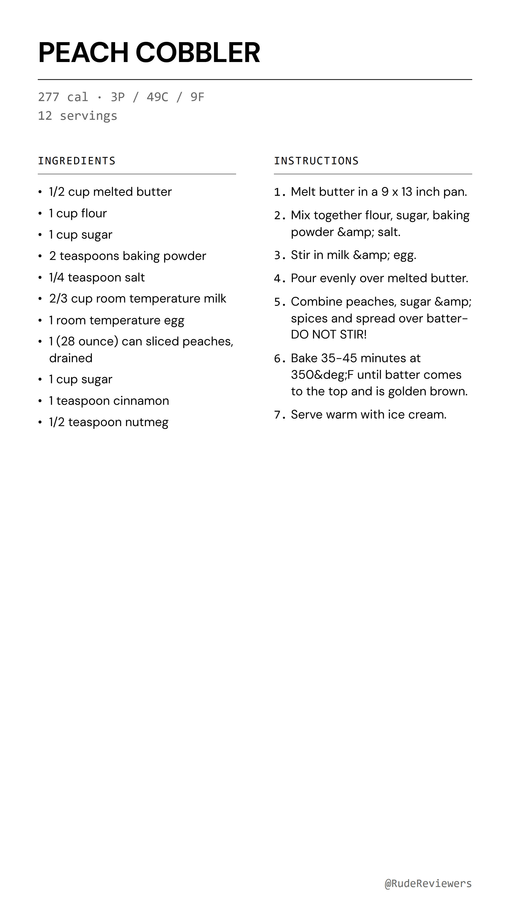

peach cobbler that doesn't feel like you're sacrificing anything INGREDIENTS: - 1/2 cup melted butter - 1 cup flour - 1 cup sugar - 2 teaspoons baking powder - 1/4 teaspoon salt - 2/3 cup room temperature milk - 1 room temperature egg - 1 (28 ounce) can sliced peaches, drained - 1 cup sugar - 1 teaspoon cinnamon - 1/2 teaspoon nutmeg INSTRUCTIONS: 1. Melt butter in a 9 x 13 inch pan. 2. Mix together flour, sugar, baking powder & salt. 3. Stir in milk & egg. 4. Pour evenly over melted butter. 5. Combine peaches, sugar & spices and spread over batter-DO NOT STIR! 6. Bake 35-45 minutes at 350°F until batter comes to the top and is golden brown. 7. Serve warm with ice cream. Recipe by Suellen Anderson via food.com #peachcobbler #dessert #recipe #easyrecipes #homemade #foodtok #baking
Long-press each photo → Save to Photos. Then open TikTok → Photo post.
